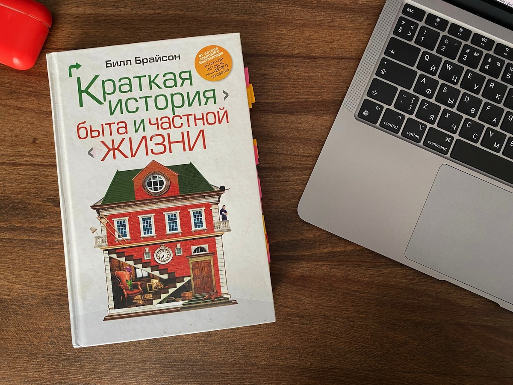

Второй книгой, прочитанной в этом году, стала «Краткая история быта и частной жизни» Билла Брайсона.
Книгу эту я купил много лет назад, даже начинал читать, но потом отвлёкся на социальные сети или сериал.
Произведение представляет собой сборник исторических фактов о становлении быта современного европейского человека.
Во время прочтения постоянно ловишь себя на мысли насколько проще сегодня стала жизнь. Подавляющему большинству из нас (по крайней мере из тех, кто читает этот текст) ни разу в жизни не приходилось бороться за жизнь. А во времена, которые охватывает книга (18-19 века) выживать, часто безуспешно, приходилось всем, от крестьянина до короля.
Книга помогает лучше понять устройство современного мира, научиться искать истинные причины казалось непонятных сходу явлений: зачем люди чернили зубы, в чём смысл ранних браков, и почему первые застеклённые слуховые окна в Англии были круглыми.